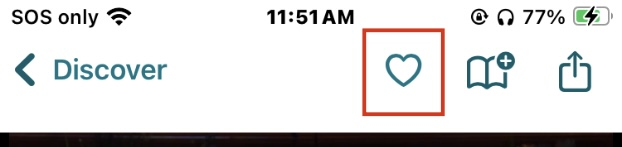
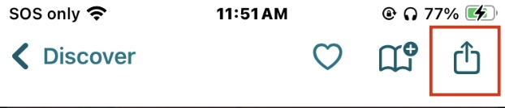
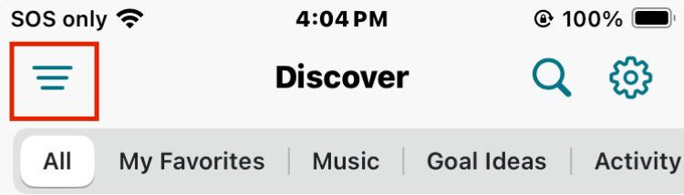
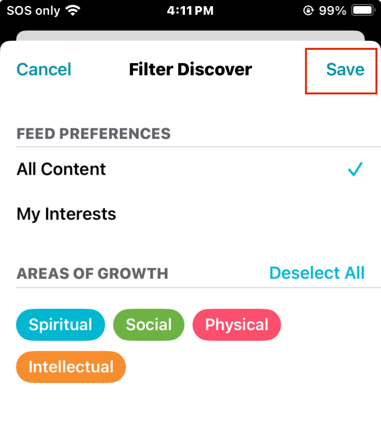

The Gospel Living App offers a refreshing and uplifting alternative to traditional social media feeds. Its Discover page features a selection of inspirational messages in the form of short articles and videos, helping users stay connected to faith-based principles and positive values in their day-to-day lives.

Browse by search
Search for a specific article or topic by selecting the search üîç icon located at the top right corner of the screen.
Browse by topic
Tap a topic at the top of the screen to see articles about that topic.
Reading an Article
While reading an article you can...
- Add it to your favorites by selecting the heart icon. 
- Capture your thoughts and create a new goal by tapping the book icon.
- Share with your Circles and contacts outside of Gospel Living by tapping the share icon. 
All three of these features are located in the top right corner of the screen.
Set filters in the Discover page
You can set filters in the Discover page to only see articles of a specified variety. In order to do that, you need to...
- Select the filter button at the top of the screen 
- Select My Interests to activate filters that have been previously set, or select more options. You may also select an Area of Growth to filter by those categories as well.
- Select save in the top right to save your filters 
With these filters active you can now browse the discover page only seeing the type of content you set. To disable them, follow the instructions again and deselect any filters that are active.
Tip: When filters are active, the filter button will turn blue.